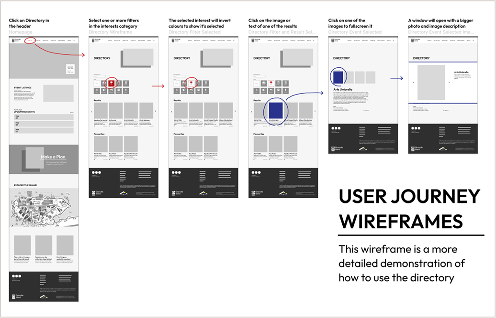
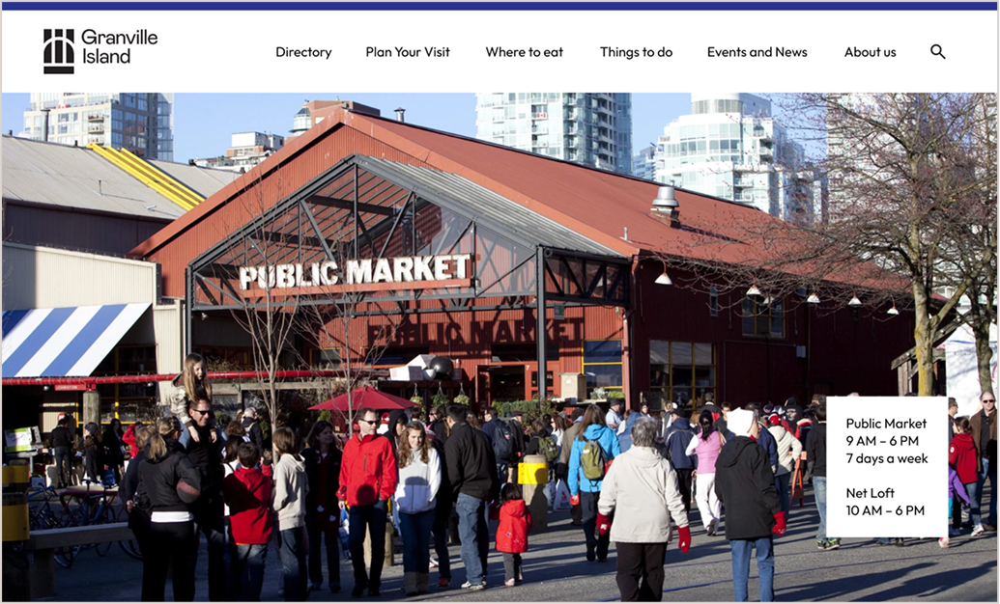
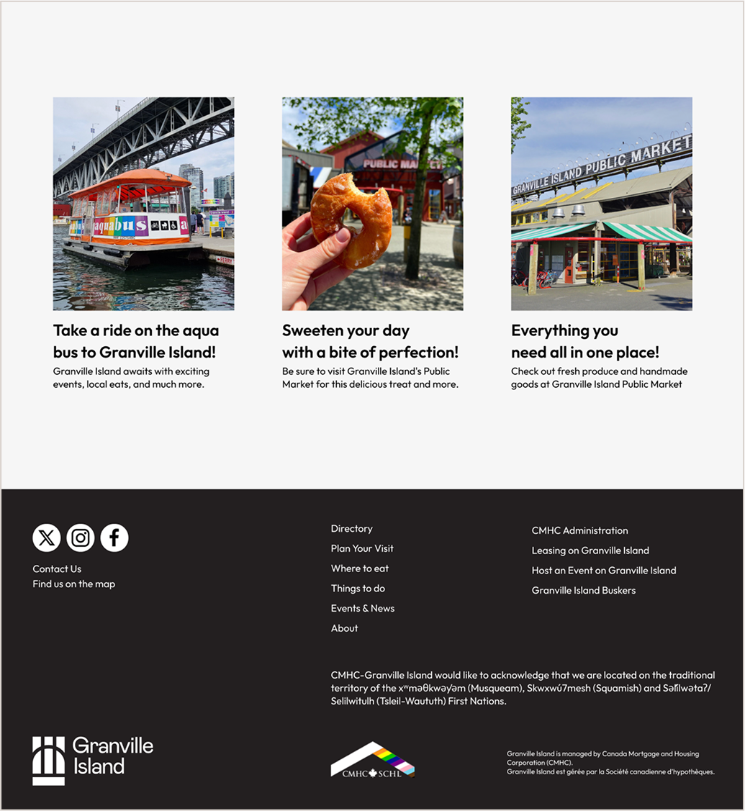

Website Redesign
This is a project that I think best demonstrates my knowledge of user-focused design. A lot of what we focused on in my program centred around user research and different ways to measure how a user would interact with a website. The Granville Island website was a perfect case study for this, as it serves both locals and tourists.
Being local to Vancouver, this project was especially interesting for me as I am a member of the audience that it’s aiming to attract. My approach involved analyzing the existing site, identifying pain points, and redesigning to improve visual appeal and simplicity. I focused a lot on improving the information hierarchy and simplicity as I’d imagine being a tourist trying to navigate a new place would be overwhelming enough on it’s own. There was also a lot of feedback on the websites old colours being childish, so when I did my redesign I used less colours and more engaging images to keep the fun and vibrant feel that Granville island has.
Nourish BC
This project really reinforced the importance of balancing functionality with aesthetics, ensuring that the design was highly usable. I also found that this was one of the assignments where I was able to grasp the usefulness of user journey maps, even though it’s not my favourite part of interactive design, I feel it’s the area I’ve improved in most. In the future I hope that I get more assignments to improve visual elements too! Below are some examples of the websites homepage and a user journey map I made.
  